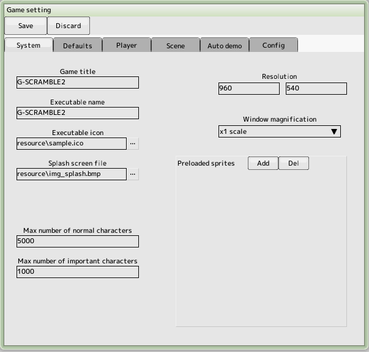
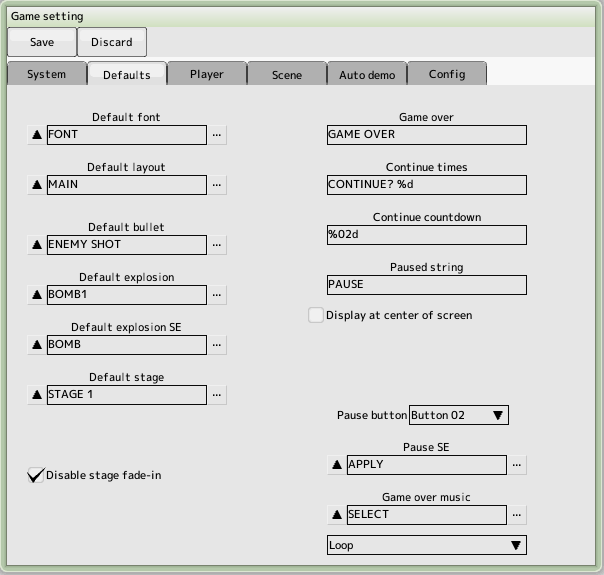
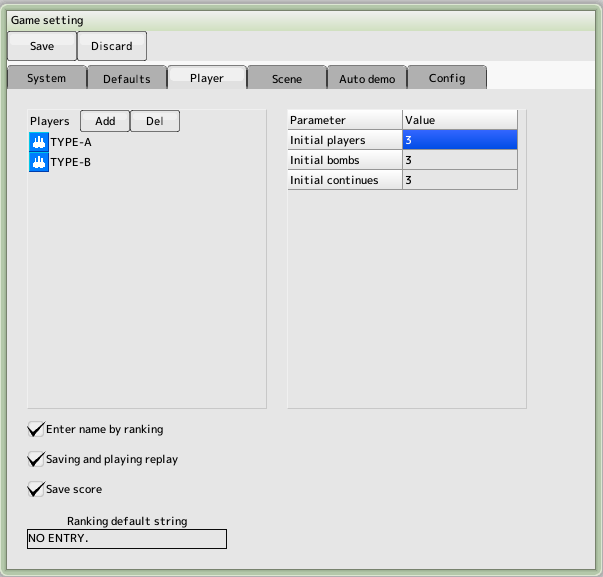
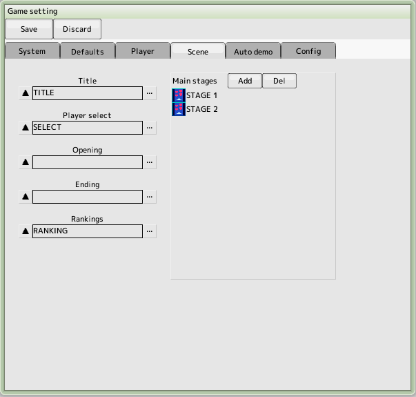
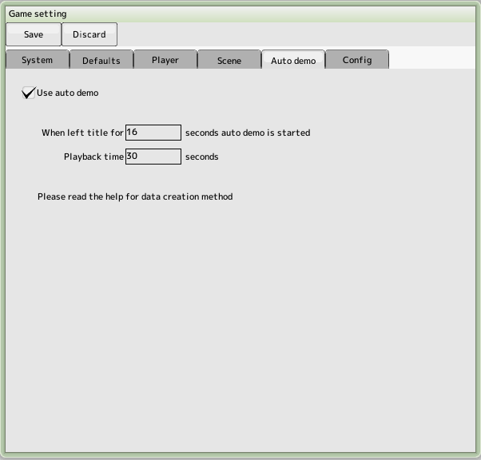
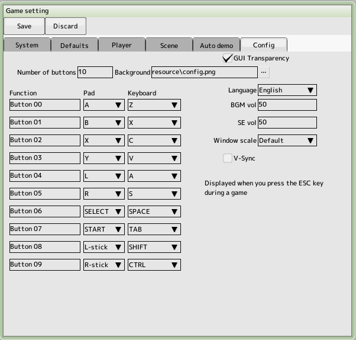
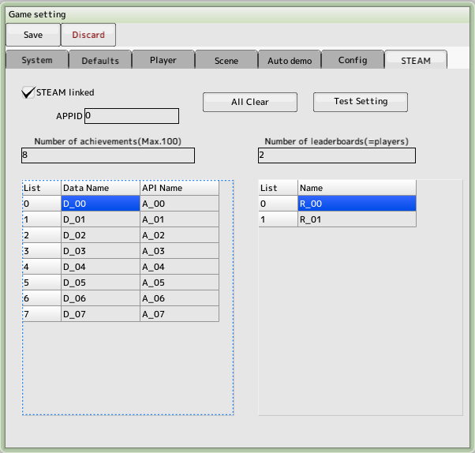

back to the original page
back to the original page
Game settings
Setting up the game in general.
System Tab

- The game title
Changing the title will reset score.bin
- Execution File Name
Set the name of the executable file for the build, excluding .exe.
- Execution file icon
If you want to change the icon of the executable file, you can set please. The only file format that can be specified is .ico. If the extension is .ico
But the content may be a bitmap file (not available)
- Splash screen file
Displayed during loading at game startup
If not provided, the default SB logo will be displayed
- The maximum number of normal (important) characters
The maximum number of characters that can appear on the screen and whether or not important characters are checked in the character editing process
This number cannot be exceeded during the game
- Resolution
Screen Resolution for Game Reference
- Window magnification
Affects window size
- Resident Sprite
This is all the sprites that will be loaded before the game starts. If the sprite is not resident, it will be loaded at the start of the stage
Default tabs

- Default font
Fonts for game over, pause display string
- Default layout
Layout without layout settings in stage editing
- Default bullets
Used when running a barrage test
- Default explosion
Explosion used in default script
- Default explosion sound
Explosion sound used in default script
- Default stage
Stage to be used for unit test execution
- Disable fade-in at the start of a stage
Check if you want to fade yourself
- Game Over
String to be displayed when the game is over
- Continue (times)
String that displays the number of continuations remaining
- Continue (countdown)
Continue waiting string
- Pausing
String to be displayed while pausing
- Choose between the center of the screen or the center of the main screen to display the above
Choose the center of the screen
- Buttons
- Decide
Goto Next
- Cancel
back to previous
- Config
Bring up the configuration screen.
- Ranking
Transition from the title screen to the ranking screen
- Pause
Pause in game
- Pause sound
Sound effect to be played during pause
- Game Over BGM
BGM to be played when the game is over
Selects whether there is a loop or not, and whether the scene transitions at the end of the BGM
Player Tab

- Player List
Register a player to be used. You can register more than one player and select them during the game
- Initial players
Number of players remaining at the start of the game
- Initial bombs
Number of bombers left at the start of the game
- Initial continues
The number of times you can continue
- Max score
Maximum score during the game
- Enter a name in the ranking
At the end of the game, go to the ranking screen to enter a name
- Save and play replays
Save replays to disk when registering for ranking
- Ranking default string
Unentered names in the ranking
- Ranking aggregation method
- Aggregated by player(max 10)
The data will be counted by player type. The number of player types is limited to a maximum of 10
- Aggregation of all players
All players will be counted into one ranking. There is no limit to the number of player types
Scene Tab

- Title
Register the stage to be used for the title screen
- Select Player
Register the stage to be used in the player selection screen
- Register the stage to be used in the ranking
by clicking on a button from the title screen
- Opening
Automatic transition after player selection
- Ending
Automatic transition after clearing the bottom of the main stage
- Main Stage
Register the main stage in order from the first level.
Auto Demo Tab

- Using Auto Demo
Auto demo will play when the title is left unattended for a period of time
- Leave time
Start playing auto demo after leaving it for a specified number of seconds in the title
- Playback time
Seconds to play the auto demo. Automatic transition to the title after the specified number of seconds
- How to create an auto demo
- Play normally and create replay data
The file name is "replayzzXX.bin". (XX is 00-99,zz is 00-09)
- Rename the replay file
replayzzXX.bin"->"demoXX.bin"
- Enable auto-demo in game settings
- put demoXX.bin in the same folder as the SBD file
- Not required for distribution as it will be included in the DAT file when built
Config tab

Associate the function name with the pad and keyboard.
You can use the ESC key to bring up this screen while running a built game
You can enter function names for Japanese and English. Please switch the language setting
- Number of buttons
Number of buttons to display
- Background image
Choose the background image within the window
- GUI transparency
GUI will be transparent
- Language setting
Select language for display
- BGM volume
Music volume
- SE volume
Sound effect volume
- Window Scale
Window size
- V-Sync
Affects delay
- Fullscreen
Run in full screen
- Vibration
Enable controller vibration
- Version
Game version number
- Preview
After saving the game settings, the config screen is displayed
STEAMタブ

- STEAM linked
Check this box if you want to link with STEAM achievements and rankings.
- APPID
Enter the APPID you set in STEAM
- Stop automatic update of leaderboards
It will be updated with scripts only
- Number of Achievements
Enter the number of achievements set in STEAM.
- Number of LeaderBoards
Enter the number of players registered in the player tab.
- Data Name
Set the API name for the STEAM data page
- API Name
Sets the API name for the STEAM achievements page
- Name
Sets the name of the STEAM ranking page
- All Clear
Clear all contents
- Test Setting
Set up a dummy for debugging on the tool
Note:
You will not be able to access your game's achievements and leaderboards while debugging on the tool.
While debugging on the tool, you will not be able to access the achievements and leaderboards of the game you are creating.
We have prepared achievements and leaderboards to replace them.
Clicking the "Test Setting" button will replace them with the new settings.
Back to the top of the page